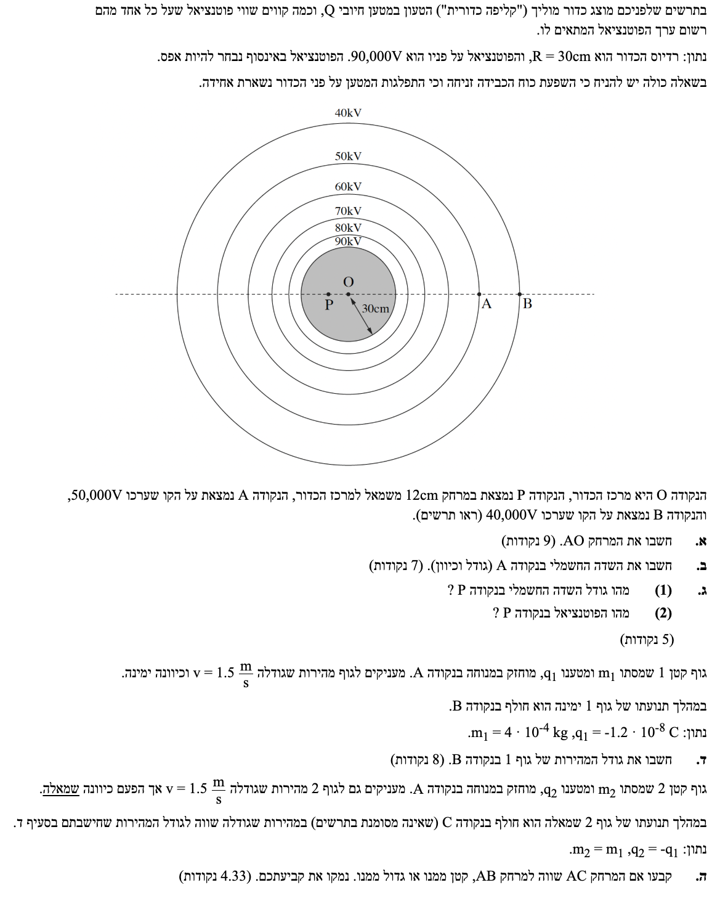

תלמידים יקרים, לפניכם פתרון מפורט צעד-אחר-צעד. מומלץ לקרוא בעיון את "טיפי המורה" המשובצים בפתרון, הם יעזרו לכם להבין את הפיזיקה שמאחורי המספרים ולא רק להציב בנוסחאות. בהצלחה!

את המרחק של נקודה A ממרכז הכדור (המרחק AO). נסמן מרחק זה ב- \( r_A \).
נוסחה זו מתארת פוטנציאל חשמלי סביב מטען נקודתי. במקרה של כדור מוליך טעון, הפוטנציאל מחוץ לכדור ועל פניו מתנהג בדיוק כאילו כל מטען הכדור מרוכז במרכזו.
תחילה, נמצא את המטען של הכדור \( Q \). נשתמש בנתונים על פני הכדור ונציב בנוסחת הפוטנציאל:
כעת, נשתמש במטען שמצאנו כדי לחשב את המרחק של נקודה A ממרכז הכדור. נציב את הפוטנציאל בנקודה A ואת המטען \( Q \):
ניתן להמיר חזרה לסנטימטרים לנוחות (54 ס"מ), אך התשובה במטרים היא התקנית.
תשובה סופית: \( r_A = 0.54\text{ m} \)
את גודל וכיוון השדה החשמלי בנקודה A. נסמן אותו ב- \( \vec{E}_A \).
גודל שדה חשמלי סביב מטען נקודתי (או מחוץ לכדור מוליך). הכיוון של השדה נקבע לפי סימן המטען: מטען חיובי מייצר שדה הדוחה מטעני בוחן חיוביים (כיוון רדיאלי החוצה).
נציב את הנתונים ישירות לנוסחת השדה:
לגבי הכיוון: הכדור טעון חיובית. שדה חשמלי ממטען חיובי מכוון רדיאלית החוצה ממנו. מכיוון שנקודה A נמצאת מימין למרכז הכדור (על הציר המקווקו), וקטור השדה יצביע ימינה.
תרשים להמחשת כיוון השדה בנקודה A
נרשום את התוצאה הסופית ב-3 ספרות מהותיות ובכתיב מדעי:
תשובה סופית: \( E_A = 9.26 \cdot 10^4\text{ N/C} \), ימינה
(1) מהו גודל השדה החשמלי בנקודה P?
(2) מהו הפוטנציאל בנקודה P?
במצב של שיווי משקל אלקטרוסטטי (מצב יציב ללא תנועת מטענים), השדה החשמלי בתוך כל מוליך, ללא תלות בגודלו או בצורתו, חייב להיות אפס מוחלט (\( E_{\text{in}} = 0 \)). מדוע בעצם? הרי במוליך קיימים שפע של אלקטרונים חופשיים. אילו היה קיים שדה חשמלי בתוך המוליך, השדה היה מפעיל עליהם כוח חשמלי (\( F = qE \)) וגורם להם לנוע.
אבל למה תנועתם חייבת להיפסק? אם האלקטרונים היו נעים ללא הרף במוליך, היה נוצר בו זרם חשמלי תמידי המייצר חום (בגלל ההתנגדות של המוליך). ייצור של חום ואנרגיה יש מאין, ללא כל מקור אנרגיה חיצוני (כמו סוללה), סותר לחלוטין את חוק שימור האנרגיה! לכן, המערכת חייבת להגיע למצב סטטי: מטענים עודפים ינועו במשך שבריר שנייה אל פני השטח של המוליך, ויסתדרו עליו בדיוק בצורה שבה השדה החשמלי שהם מייצרים מבטל לחלוטין את השדה הפנימי.
ומכאן נובעת ההשלכה הישירה על הפוטנציאל: אם השדה בתוך המוליך הוא אפס, הכוח החשמלי הוא אפס. המשמעות היא שלא מתבצעת שום עבודה בהזזת מטען ממקום למקום בתוך המוליך (\( W = 0 \)). מכיוון שהפרש פוטנציאלים בין שתי נקודות מוגדר על ידי עבודת הכוח החשמלי ביניהן (\( \Delta V = -\frac{W}{q} \)), המסקנה הבלתי נמנעת היא שהפרש הפוטנציאלים בין כל שתי נקודות בפנים הוא 0. במילים אחרות: הפוטנציאל בכל נקודה בתוך המוליך קבוע לחלוטין ושווה בדיוק לפוטנציאל שעל פני השטח שלו.
מתוך ההרחבה לעיל: בתוך כדור מוליך \( E_{\text{in}} = 0 \) והפוטנציאל נשמר קבוע וערכו שווה לזה שעל שפת הכדור \( V_{\text{in}} = V_{\text{surface}} \).
נשווה את המרחק של נקודה P לרדיוס הכדור: \( r_P = 0.12\text{ m} \) בעוד ש- \( R = 0.3\text{ m} \). מכיוון ש- \( r_P < R \), נקודה P נמצאת בתוך הכדור המוליך.
לפי העקרונות שציינו:
את גודל המהירות של גוף 1 בנקודה B. נסמן ב- \( v_B \).
עבודת הכוח החשמלי במעבר בין שתי נקודות. משפט עבודה-אנרגיה אומר שכיוון שאין כוחות נוספים שעושים עבודה, עבודת הכוח החשמלי שווה לשינוי באנרגיה הקינטית.
ראשית, נצייר תרשים גוף חופשי (FBD) כדי להבין אינטואיטיבית מה קורה לגוף:
תרשים כוחות: המטען השלילי נע ימינה, אך השדה החשמלי ימינה מפעיל עליו כוח שמאלה.
מהתרשים אנו מבינים שהכוח החשמלי פועל נגד כיוון התנועה, לכן הוא מבצע עבודה שלילית וצפוי שגודל המהירות יקטן.
כעת נחשב את עבודת הכוח החשמלי:
נחשב את האנרגיה הקינטית ההתחלתית בנקודה A:
נשתמש במשפט עבודה-אנרגיה למציאת האנרגיה הקינטית בנקודה B וממנה את המהירות:
נחלץ את המהירות בנקודה B:
נעגל את התשובה ל-3 ספרות מהותיות:
תשובה סופית: \( v_B = 1.28\text{ m/s} \)
לקבוע האם המרחק AC שווה למרחק AB, קטן ממנו או גדול ממנו, ולנמק.
הקשר בין שינוי באנרגיה הקינטית להפרש הפוטנציאלים, וכן העיקרון שככל שהשדה החשמלי חזק יותר (קרוב יותר למטען המקור), משטחים שווי פוטנציאל (עבור אותו מרווח מתח) יהיו צפופים וקרובים יותר זה לזה.
מכיוון שהמסות שוות (\( m_2 = m_1 \)), והמהירויות ההתחלתיות והסופיות שוות בגודלן (\( v_{A,2} = v_{A,1} \) וגם \( v_C = v_B \)), הרי שהשינוי באנרגיה הקינטית של שני הגופים זהה!
לכן, עבודת הכוח החשמלי שנעשתה על גוף 2 בדרכו מ-A ל-C שווה לעבודה שנעשתה על גוף 1 מ-A ל-B:
נציב את הנתונים כדי למצוא את הפוטנציאל בנקודה C:
מצאנו שהפוטנציאל בנקודה C הוא \( 60,000\text{ V} \). אם נתבונן בתרשים הנתון בשאלה, נראה שמשורטטים בו קווים שווי פוטנציאל בדיוק עבור הערכים \( 40\text{kV} \), \( 50\text{kV} \) ו-\( 60\text{kV} \). ניתן לראות בבירור מהשרטוט שהמרחק בין המעגל של \( 50\text{kV} \) לבין המעגל של \( 60\text{kV} \) קטן משמעותית מהמרחק בין המעגל של \( 50\text{kV} \) לבין המעגל של \( 40\text{kV} \).
הסיבה הפיזיקלית לכך היא שהשדה החשמלי חזק יותר ככל שקרובים יותר לכדור הטעון. כאשר השדה חזק יותר, נדרש מרחק פעולה קטן יותר כדי לייצר את אותו שינוי בפוטנציאל (\( \Delta V = 10,000\text{ V} \)). לכן, קווי הפוטנציאל צפופים יותר באזורים שקרובים למטען. המסקנה הישירה מהתרשים היא שהמרחק AC קטן מהמרחק AB.
מסקנה: המרחק AC קטן מהמרחק AB.